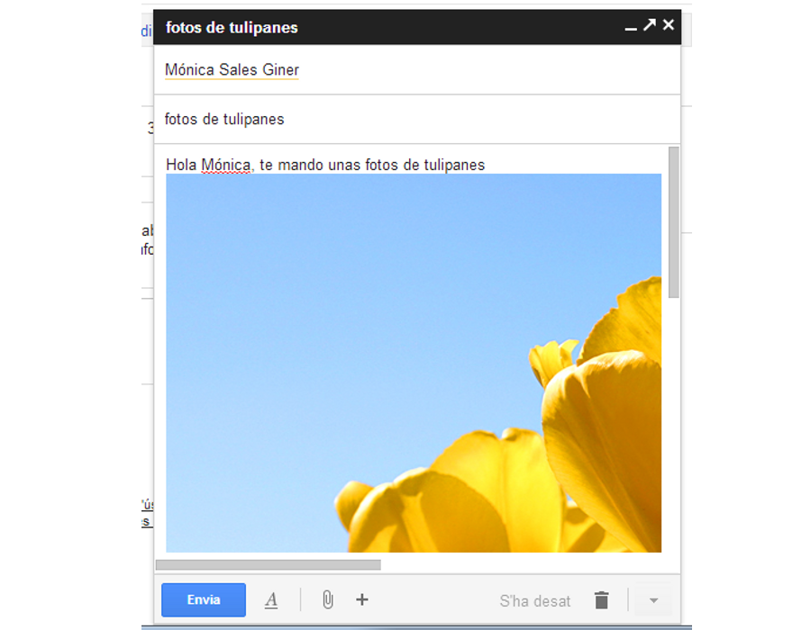
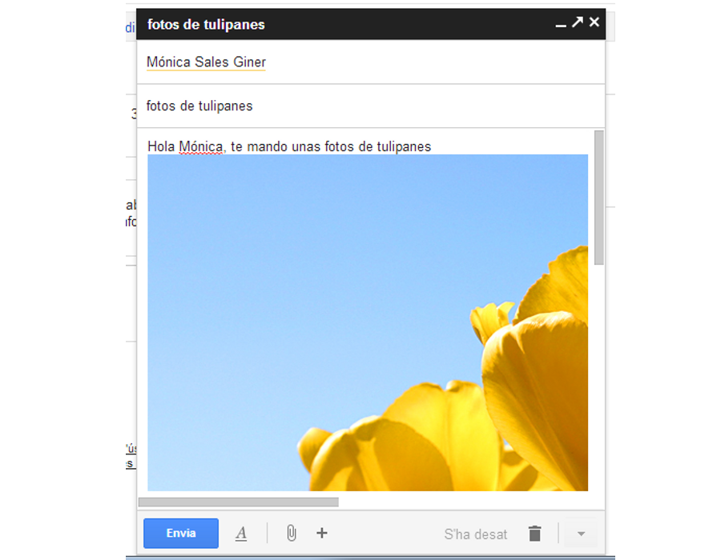

Iniciación a la informática e Internet
Utilizando el correo electrónico en el día a día
Apreta la tecla → para avanzar.


Veamos cuáles son las partes implicadas en el envío de un correo, y qué elementos necesitamos para hacer un envío.

Simplemente conociendo la dirección de correo de un usuario podemos comunicarnos con él vía correo, esté donde esté.
Hay muchísimos proveedores de correo electrónico, veamos cuáles son los principales.
Por el hecho de ser alumnos/as de la UJI ya disponemos de una dirección de correo electrónico.
Es la pantalla principal del correo, donde veremos todos aquellos mensajes que nos acaban de enviar, ordenados por fecha de recepción. Veamos qué acciones podemos realizar sobre los mensajes.
Cambia de foto con las teclas: ↑ y ↓
Es la pantalla principal del correo, donde veremos todos aquellos mensajes que nos acaban de enviar, ordenados por fecha de recepción. Veamos qué acciones podemos realizar sobre los mensajes.


 

Cambia de foto con las teclas: ↑ y ↓